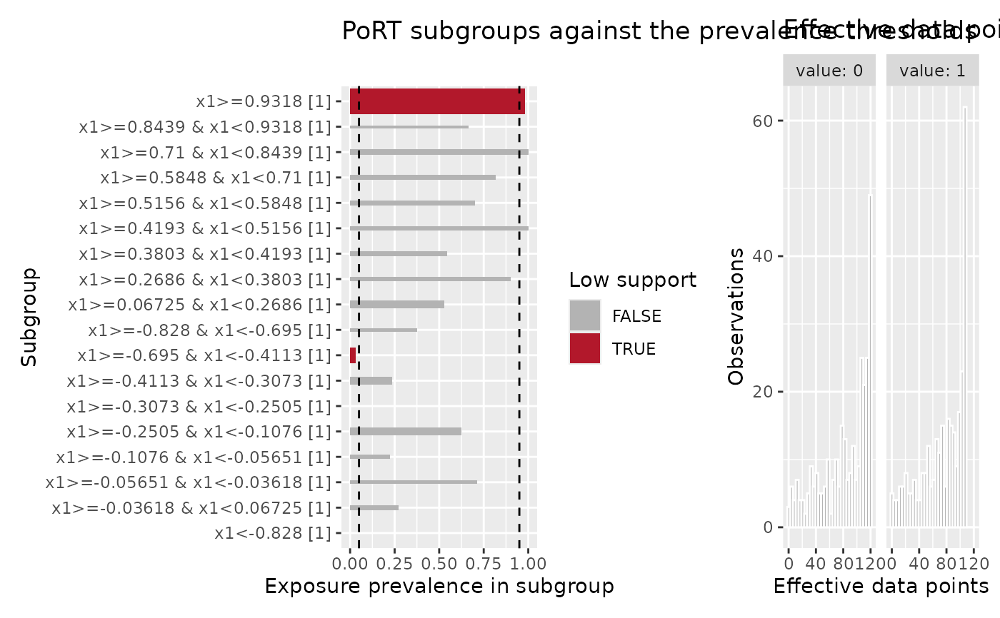
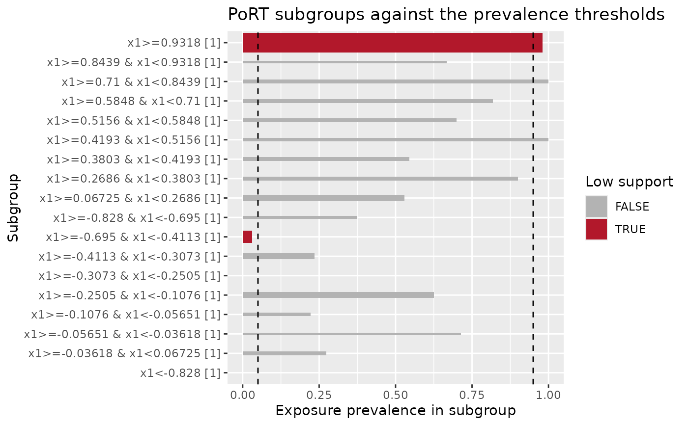

Plot the diagnostics a positivity check holds
Source:R/plot-positivity-check.R
autoplot.positivity_check.RdDraws each child's default view. With no diagnostic, the views are composed
into one panel; naming a diagnostic draws that child alone.
Arguments
- object
A positivity_check from
check_positivity().- diagnostic
Optionally, the name of one diagnostic to draw. Defaults to
NULL, which panels every child.- ...
Passed to a child's own
autoplot()method. The panel passes them to every child, so an argument only one diagnostic accepts belongs with a nameddiagnosticrather than with the panel.
Value
A ggplot2::ggplot object.
Details
The panel needs the patchwork package, which composes the children into a single object that is still a ggplot2::ggplot and so can be built on further. Without it, naming a diagnostic still works, because that path draws one child's plot and composes nothing.
A diagnostic is named the way names() lists it and $ extracts it, which is
also the name the printed report heads its sections with, so a reader can go
from a section straight to its plot.
Examples
set.seed(1)
n <- 300
x1 <- rnorm(n)
df <- data.frame(exposure = rbinom(n, 1, plogis(3 * x1)), x1 = x1)
check <- check_positivity(df, exposure, x1, diagnostics = c("port", "edp"))
#> ℹ Treating `.exposure` as binary
autoplot(check)

autoplot(check, "port")
